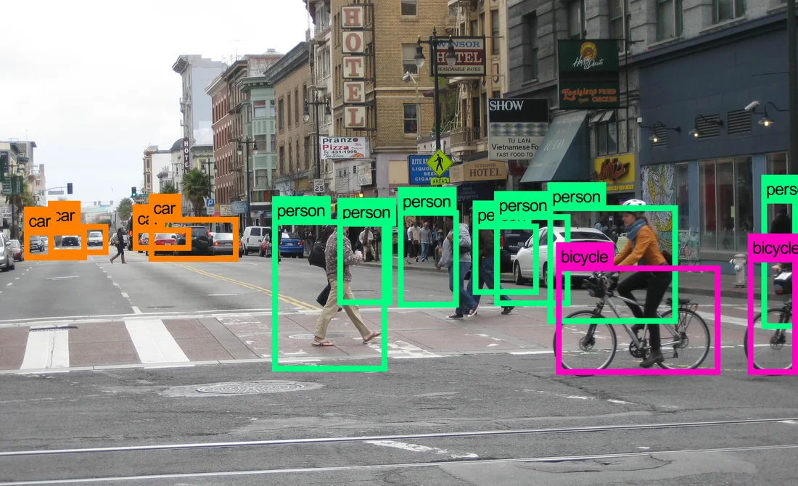

Model Pra-terlatih MobileNet untuk Deteksi Objek
Nan, dkk. mengembangkan sistem pengenalan ekspresi wajah (facial expression recognition atau FER) untuk memisahkan keadaan ekspresi tertentu dari gambar atau video statis dan menentukan emosi psikologis dari objek yang dikenali [1]. Pertama, Model A-MobileNet yang diusulkan oleh Nan, dkk., hasil modifikasi dari MobileNetV1, digunakan untuk meningkatkan ekstraksi fitur lokal dari ekspresi wajah. Kemudian, center loss dan softmax loss digabungkan untuk mengoptimalkan parameter model untuk mengurangi jarak intra-kelas dan meningkatkan jarak antar-kelas. Dibandingkan dengan model seri MobileNet asli, metode yang diusulkan secara signifikan meningkatkan akurasi pengenalan tanpa meningkatkan jumlah parameter model. Dibandingkan dengan yang lain, model A-MobileNet mencapai hasil yang lebih baik pada set data FERPlus dan RAF-DB. Akurasi masing-masing adalah 84,49% dan 88,11% pada RAF-DB dan FERPlus [1].
Biswas, dkk. mengembangkan sistem estimasi kepadatan lalu lintas yang dapat digunakan dalam sejumlah aplikasi lalu lintas, mulai dari identifikasi kemacetan hingga pengendalian lalu lintas makroskopik di dalam lingkungan perkotaan [2]. Dalam penelitian yang dilakukan, Biswas, dkk. mengimplementasikan Single Shot Detection (SSD) dan MobileNet untuk memperkirakan kepadatan lalu lintas. SSD mampu menangani berbagai bentuk, ukuran, dan sudut pandang objek. MobileNet-SSD adalah model cross-trained dari SSD ke arsitektur MobileNet, yang lebih cepat dari SSD. Peneliti menunjukkan area aplikasi utama untuk kerangka kerja SSD dan MobileNet-SSD. Kelebihan dan kekurangan kerangka kerja SSD dan MobileNet-SSD dianalisis menggunakan lima puluh sembilan kamera lalu lintas individu. Selain itu, peneliti juga membandingkan kedua algoritme dengan perkiraan kepadatan secara manual. Kerangka SSD menunjukkan potensi yang signifikan di bidang estimasi kepadatan lalu lintas. Algoritma SSD lebih lambat (∼ 5–7 FPS) tetapi lebih akurat dengan akurasi deteteksi 92,97%, sedangkan MobileNet-SSD lebih cepat (∼ 15–18 FPS) tetapi akurasi deteksi hanya 79,30% [2].
Ashwinkumar, dkk. mengembangkan sistem deteksi penyakit tanaman otomatis yang bermanfaat untuk mengurangi tugas berat dalam memantau tanaman dan untuk mengidentifikasi gejala penyakit sejak dini, yaitu ketika gejala penyakit muncul pada daun tanaman, menggunakan jaringan saraf konvolusi berbasis jaringan seluler (optimal mobile network-based convolutional neural network atau OMNCNN) yang optimal [3]. Model OMNCNN yang diusulkan beroperasi pada beberapa tahapan yang berbeda yaitu preprocessing, segmentasi, ekstraksi fitur dan klasifikasi. Hal tersebut melibatkan pra-pemrosesan berbasis penyaringan bilateral dan segmentasi gambar berbasis thresholding Kapur untuk mengidentifikasi bagian-bagian yang terpengaruh dari gambar daun. Selain itu, model MobileNet diterapkan sebagai teknik ekstraksi fitur di mana hiperparameter dioptimalkan dengan menggunakan algoritma emperor penguin optimizer (EPO) untuk meningkatkan tingkat deteksi penyakit tanaman. Pengklasifikasi berbasis mesin pembelajaran ekstrim (extreme learning machine atau ELM) digunakan untuk menentukan label kelas yang tepat ke gambar daun tanaman yang dikalkulasi. Serangkaian simulasi ekstensif dilakukan untuk mengetahui kinerja model OMNCNN. Hasil eksperimen telah menunjukkan hasil yang menjanjikan dengan presisi maksimum 0,985, recall 0,9892, akurasi 0,987, F-score 0,985 dan kappa 0,985 [3].
Vasconez, dkk., dalam makalahnya, menguji dua arsitektur yang paling umum, Faster R-CNN dengan Inception V2 dan Single Shot Multibox Detector (SSD) dengan MobileNet. Arsitektur deteksi dilatih dan diuji pada tiga buah, alpukat, lemon hass dari Chili dan apel dari California – AS, di bawah kondisi lapangan yang berbeda. Untuk mengatasi masalah penghitungan buah berbasis video, peneliti menggunakan pelacakan multi-objek berdasarkan estimasi Gaussian. Sistem yang dikembangkan mencapai kinerja penghitungan buah hingga 93% (keseluruhan untuk semua buah) menggunakan Faster-RCNN dengan Inception V2, dan 90% (keseluruhan untuk semua buah) menggunakan SSD dengan MobileNet. Arsitektur yang diterapkan menunjukkan kesalahan relatif minimum 7% saat menghitung alpukat; 13% saat menghitung apel dan 20% untuk lemon, menggunakan Faster R-CNN dengan Inception V2; dengan SSD dengan MobileNet, kesalahan relatif minimum masing-masing adalah 18%, 10% dan 25% untuk alpukat, apel, dan lemon. Namun demikian, Faster-RCNN dengan Inception V2 membutuhkan waktu komputasi sekitar 220 ms per frame, sedangkan SSD dengan MobileNet hanya membutuhkan sekitar 60 ms [4].
Álvaro Arcos-García, dkk. menganalisis model dari beberapa sistem deteksi objek (R-CNN, R-FCN, SSD, dan YOLO V2) yang lebih cepat yang dikombinasikan dengan berbagai ekstraktor fitur, seperti Resnet V1 50, Resnet V1 101, Inception V2, Inception Resnet V2, Mobilenet V1 dan Darknet-19, yang dikembangkan oleh peneliti – peneliti sebelumnya [5]. Peneliti bertujuan untuk mengeksplorasi properti dari model deteksi objek yang dimodifikasi dan secara khusus disesuaikan dengan domain masalah deteksi rambu lalu lintas melalui pembelajaran transfer (transfer learning). Berbagai model deteksi objek yang tersedia untuk umum yang sebelumnya dilatih pada dataset Microsoft COCO disetel dengan baik pada set data German Traffic Sign Detection Benchmark. Evaluasi dan perbandingan model-model ini mencakup akurasi, kecepatan, konsumsi memori, jumlah operasi floating-point dan jumlah parameter yang dapat dipelajari dalam CNN, serta mAP. Hasil akurasi dievaluasi mengikuti ukuran kuantitatif mAP dari PASCAL VOC 2010. Peneliti menemukan bahwa Faster R-CNN Inception Resnet V2 memperoleh mAP terbaik (95,77%), sedangkan R-FCN Resnet 101 memiliki trade-off (95,15%) dan waktu eksekusi (85,45 ms per gambar) terbaik. Beberapa hal khusus diberikan oleh YOLO V2 dan SSD Mobilenet. Yang pertama, mencapai hasil akurasi yang kompetitif (78,83%) dan merupakan detektor tercepat kedua dengan waktu berjalan rata-rata 21,48 ms per gambar. Yang terakhir, adalah model tercepat dari semua detektor dan juga yang paling ringan dalam hal konsumsi memori. Faktor-faktor kunci tersebut menjadikan SSD Mobilenet sebagai pilihan optimal untuk penerapan di perangkat seluler. Secara umum, semua model memberikan hasil yang baik dalam mendeteksi rambu lalu lintas dengan mAP di atas 75%. Hanya model YOLO V2 dan SSD yang mencapai lebih dari 30 FPS menggunakan NVIDIA Titan Xp. Hal tersebut membuat YOLO V2 dan SSD layak untuk deteksi rambu lalu lintas waktu nyata (real time) [5].
Fei Zhang, dkk. menyusun makalah yang mengadopsi kombinasi metode MobileNet dan SSD untuk mengenali ekspresi wajah, kemudian menerapkannya pada robot Nao [6]. MobileNet adalah model jaringan dalam yang ringan untuk perangkat seluler. Model SSD berkembang dari model VGG16 dan mempertahankan kinerja deteksi objek yang sangat baik meskipun ada penurunan tajam dalam jumlah parameter. Karena kinerja prosesor robot terbatas, sementara deep neural network harus dapat secara otomatis mengekstrak fitur gambar untuk klasifikasi yang akurat, sangat penting untuk menggunakan deep neural network yang ringan untuk menerapkan deteksi dan pengenalan waktu nyata dari robot Nao. Peneliti menggunakan Depthwise Separable Convolution dari model MobileNetV2. Hal tersebut tidak hanya dapat mengurangi parameter jaringan konvolusi tetapi juga meningkatkan presisi pengenalan pengenalan ekspresi. Peneliti menguji model pengenalan emosi pada set data fer2013 dan ck+. Akurasi uji mencapai 68,97% untuk 7.178 sampel uji pada set data fer2013 dan mencapai 89,2% untuk 252 sampel uji pada set data ck+. Melalui verifikasi eksperimental, metode ini dapat melakukan pengenalan ekspresi wajah secara real time dan akurat pada platform robot Nao [6].
[1] Y. Nan, J. Ju, Q. Hua, H. Zhang, and B. Wang, “A-MobileNet: An approach of facial expression recognition,” Alex. Eng. J., p. S1110016821006682, Oct. 2021, doi: 10.1016/j.aej.2021.09.066.
[2] D. Biswas, H. Su, C. Wang, A. Stevanovic, and W. Wang, “An automatic traffic density estimation using Single Shot Detection (SSD) and MobileNet-SSD,” Phys. Chem. Earth Parts ABC, vol. 110, pp. 176–184, Apr. 2019, doi: 10.1016/j.pce.2018.12.001.
[3] S. Ashwinkumar, S. Rajagopal, V. Manimaran, and B. Jegajothi, “Automated plant leaf disease detection and classification using optimal MobileNet based convolutional neural networks,” Mater. Today Proc., p. S2214785321042115, Jul. 2021, doi: 10.1016/j.matpr.2021.05.584.
[4] J. P. Vasconez, J. Delpiano, S. Vougioukas, and F. Auat Cheein, “Comparison of convolutional neural networks in fruit detection and counting: A comprehensive evaluation,” Comput. Electron. Agric., vol. 173, p. 105348, Jun. 2020, doi: 10.1016/j.compag.2020.105348.
[5] Á. Arcos-García, J. A. Álvarez-García, and L. M. Soria-Morillo, “Evaluation of deep neural networks for traffic sign detection systems,” Neurocomputing, vol. 316, pp. 332–344, Nov. 2018, doi: 10.1016/j.neucom.2018.08.009.
[6] F. Zhang, Q. Li, Y. Ren, H. Xu, Y. Song, and S. Liu, “An Expression Recognition Method on Robots Based on Mobilenet V2-SSD,” in 2019 6th International Conference on Systems and Informatics (ICSAI), Shanghai, China, Nov. 2019, pp. 118–122. doi: 10.1109/ICSAI48974.2019.9010173.